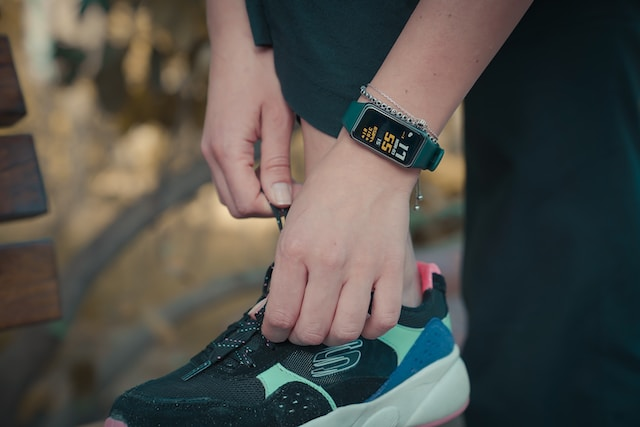
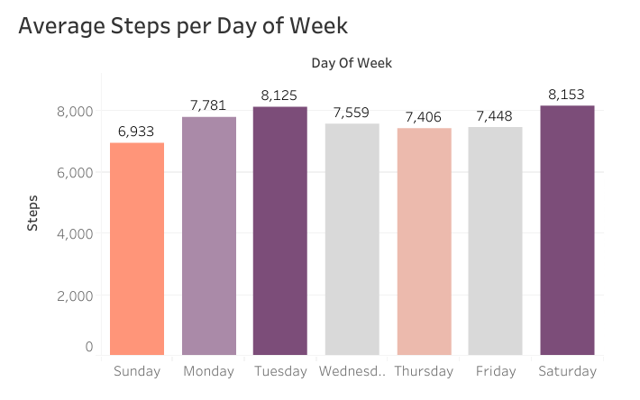
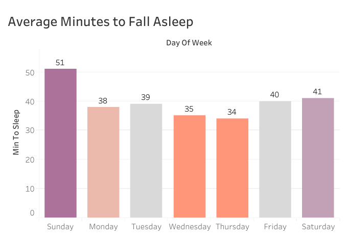

Back
Bellabeat 2.0 Project in SQL & Tableau
Project Details:
I thought it would be a fun exercise to revisit my first dashboard project and redo it using the skills I've learned since then. I used the same exact data that I used in the original project to make it fair. So here goes... Bellabeat has a variety of wellness products for women which track activity, sleep, and stress that connect to the Bellabeat app. Fitbit device data and Google Trends search data were analyzed to help Bellabeat stakeholders gain insight into the smart device market. They also wanted to know how their products fit in and how they can gear their marketing strategy to get more sales. Data cleaning was conducted in Excel, exploration in SQL (BigQuery), visualization in Tableau and presentation in PowerPoint.The full interactive Tableau Dashboard can be found Here
The SQL code can be found Here
Business Task: Help stakeholders gain insight into the smart device market, how their product fits in and how they can gear their marketing strategy to get more sales.
Stakeholders: Urška Sršen: Bellabeat’s cofounder & Chief Creative Officer, Sando Mur: Mathematician and Bellabeat’s cofounder, executive team member and Bellabeat marketing analytics team.
Insights:
- The data shows that more people are interested in tracking steps vs other metrics. Although, sleep tracking has overtaken activity tracking in popularity over the past few years.
- 58% of the Fitbit participants included a moderate number of steps, but only 21% reached the recommended 10,000 steps per day and the remaining 21% were sedentary taking less than 5,000 steps per day.
- The participants took the most steps on Tuesdays and Saturdays and the least on Sunday.
- The participants were mostly sedentary and with a small amount of light activity throughout the week.
- Time to fall asleep was 35-40 minutes on average during weekdays and Saturdays. On Sundays it took them 51 minutes to fall asleep.
- More complete data with a much larger sample set is needed in order to come to a more accurate conclusion.
- Bellabeat should concentrate more on step tracking and sleep tracking/hygiene since those are the more popular Google search terms in recent years.
- They could have customers set weekly activity, step and sleep goals starting on Sundays, since that's the day they take the least amount of steps, take longer to fall asleep and sleep the most.
- They could address activity levels with alerts to remind customers to get up and move when they are sedentary for a long period of time.
- They could also have competitions between app users to encourage more steps and activity.
- This project includes Google Trends Search Term Data and FitBit Fitness Tracker Data originally crowd sourced from 30 eligible Fitbit users in 2016 by: Furberg, Robert; Brinton, Julia; Keating, Michael; Ortiz, Alexa.
- The FitBit data is not ROCCC, it is bad quality data (outdated, not from the original source, and incomplete). It is possibly biased due to the small sample size.
- Of all the participants only 24 participated in the sleep data, 33 in the daily activity and 8 in the weight data.



